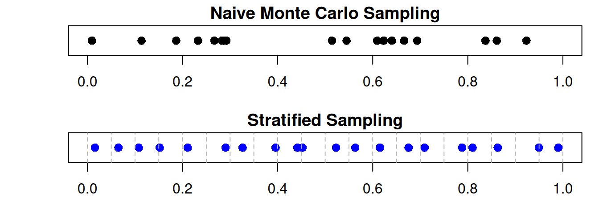
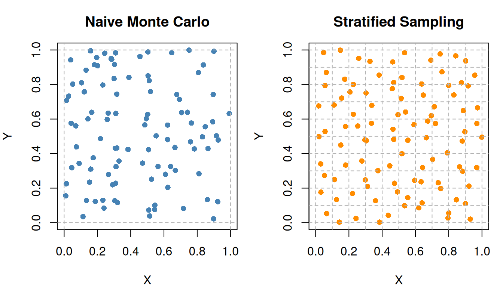
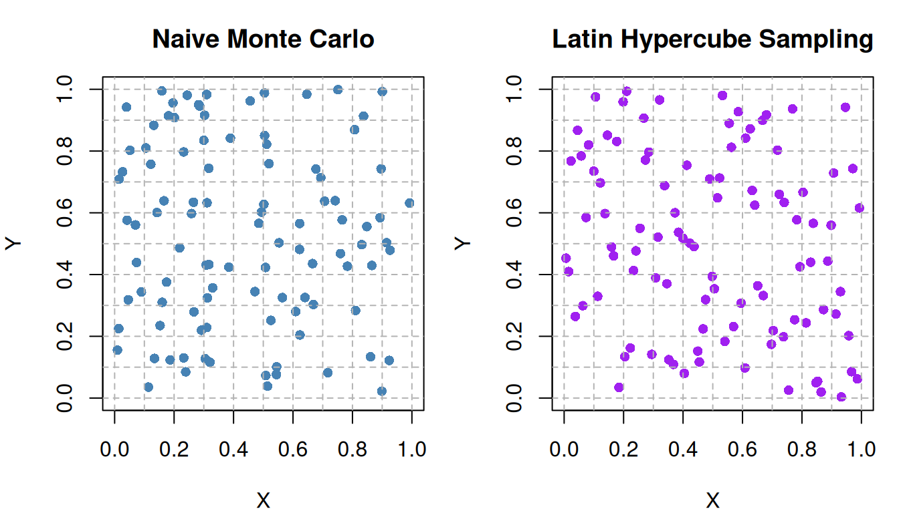

Monte Carlo methods are powerful and flexible, but they can sometimes be computationally inefficient. In particular, naive Monte Carlo estimators may exhibit high variability, requiring a very large number of simulations to obtain accurate estimates.
Recall that the Monte Carlo standard error decreases at the rate
\[
SE \propto \frac{\sigma}{\sqrt{N}}
\]
This convergence rate is relatively slow when the target quantity is rare, the integrand has high variance, or simulation runs are computationally expensive.
Variance reduction techniques are strategies designed to reduce the variance of Monte Carlo estimators without necessarily increasing the number of simulations, thereby improving their efficiency and accuracy. In this section, we will explore some common variance reduction methods, including:
Importance sampling
Stratified sampling
Latin Hypercube Sampling
47.1 Importance Sampling
Importance sampling is a powerful variance reduction technique that allows us to estimate properties of a target distribution by sampling from a different, more convenient distribution.
However, if the important contribution to the integral comes from regions that are rarely sampled under \(f(x)\), the estimator may have high variance.
Instead of sampling directly from \(f(x)\), we sample from an alternative distribution \(g(x)\) that places more probability mass in important regions.
while correcting for the change in sampling distribution using weights.
This is especially useful for:
rare-event simulation;
reliability analysis;
financial risk estimation;
Bayesian computation.
Evaluation of Importance Sampling
The efficiency of importance sampling depends heavily on the choice of the proposal distribution \(g(x)\). A good proposal distribution should:
place more probability mass in important regions of the target distribution;
have tails at least as heavy as the target distribution \(f(x)\);
be easy to sample from and evaluate.
If the proposal distribution assigns very small probability to important regions, the importance weights
\[
\frac{f(x)}{g(x)}
\]
can become highly variable, leading to unstable estimates.
A common way to compare estimators is through their variances. The relative efficiency of importance sampling compared with standard Monte Carlo sampling may be measured by
This can be interpreted as the speedup factor by which the importance sampling estimator achieves the same precision as the MC estimator. An efficiency less than 1 indicates that importance sampling is more efficient, while an efficiency greater than 1 indicates that it is less efficient.
Since estimator variability affects uncertainty quantification, confidence intervals also reflect the difference in performance. In general, a lower-variance estimator produces narrower confidence intervals.
For a Monte Carlo estimator \(\hat{\theta}\), an approximate \(100(1-\alpha)\%\) confidence interval is
where \(z_{\alpha/2}\) is the critical value from the standard normal distribution corresponding to the desired confidence level.
Example 1: Estimating a Rare Event Probability
Suppose
\[
X \sim N(0,1),
\]
and we wish to estimate \(P(X>4).\)
Under standard Monte Carlo sampling, observations larger than 4 are rare, leading to noisy estimates. Importance sampling instead samples from a shifted distribution such as
\[
g(x) = N(4,1),
\]
which generates large values more frequently.
The resulting estimator has substantially lower variance.
set.seed(1123)n <-10000x <-4# Theoretical valuetrue_value <-1-pnorm(x)# Standard Monte CarloX_mc <-rnorm(n)theta_mc <-mean(X_mc > x)var_mc <-var(X_mc > x) / n# Importance SamplingX_is <-rnorm(n, mean = x)weights <-dnorm(X_is, mean =0) /dnorm(X_is, mean = x)theta_is <-mean((X_is > x) * weights)var_is <-var((X_is > x) * weights) / n# Output resultscat("True value:", true_value, "\n")
Notice that the importance sampling estimate is much closer to the true value of \(P(X>4)\), which is approximately \(3.17 \times 10^{-5}\). The efficiency is significantly less than 1, indicating that importance sampling is much more efficient than standard Monte Carlo for this rare event estimation.
The 95% confidence interval for both estimators are:
z_alpha <-qnorm(0.975)ci_mc <- theta_mc +c(-1, 1) * z_alpha *sqrt(var_mc)ci_is <- theta_is +c(-1, 1) * z_alpha *sqrt(var_is)cat("95% CI for Standard MC: [", ci_mc[1], ",", ci_mc[2], "]\n")
95% CI for Standard MC: [ -9.59964e-05 , 0.0002959964 ]
cat("95% CI for Importance Sampling: [", ci_is[1], ",", ci_is[2], "]\n")
95% CI for Importance Sampling: [ 3.020023e-05 , 3.283089e-05 ]
Python Version
from scipy.stats import normz_alpha = norm.ppf(0.975)ci_mc = (theta_mc - z_alpha * np.sqrt(var_mc), theta_mc + z_alpha * np.sqrt(var_mc))ci_is = (theta_is - z_alpha * np.sqrt(var_is), theta_is + z_alpha * np.sqrt(var_is))print(f"95% CI for Standard MC: [{ci_mc[0]}, {ci_mc[1]}]")print(f"95% CI for Importance Sampling: [{ci_is[0]}, {ci_is[1]}]")
The confidence interval for the standard Monte Carlo estimator is much wider than that of the importance sampling estimator, further illustrating the efficiency gain from using importance sampling in this context.
47.2 Stratified Sampling
Pure random sampling may accidentally oversample some regions of the sample space while undersampling others. This can increase Monte Carlo variability. Stratified sampling divides the sample space into non-overlapping regions called strata, then samples separately within each stratum.
Figure Figure 47.1 explains the concept of stratified sampling, a statistical sampling method used to ensure that important subgroups of a population are properly represented in a study.
On the left, the entire population contains 400 individuals represented by different colored icons. The colors indicate different groups within the population.
The population is divided into homogeneous subgroups (strata) based on a shared characteristic — in this example, age groups:
Stratum 1 (blue): Ages 18-30 → N = 100
Stratum 2 (green): Ages 31-45 → N = 120
Stratum 3 (purple): Ages 46-60 → N = 100
Stratum 4 (orange): Ages 61 and above → N = 80
The number of random samples taken from each stratum is proportional to the size of the stratum in the population:
From Stratum 1, \(n_1 = 10\).
From Stratum 2, \(n_2 = 12\).
From Stratum 3, \(n_3 = 10\).
From Stratum 4, \(n_4 = 8\).
All selected individuals are combined into one final sample, n=40, which is representative of the entire population.
In Monte Carlo integration, stratified sampling is able to reduce variance of the estimator compared to naive Monte Carlo sampling because:
all regions of the sample space are represented;
sampling becomes more balanced;
extreme clustering is avoided.
Instead of sampling uniformly across the entire interval, we can partition it into \(K\) equal subintervals (strata):
Assuming independence between strata, the variance of the stratified estimator is given by \[
\boxed{\text{Var}(\hat{\theta}_{strat})
=
\sum_{k=1}^K
p_k^2 \text{Var}(\hat{\theta}_k)
=
\sum_{k=1}^K
p_k^2 \frac{\sigma_k^2}{n_k}}.
\]
A common allocation is proportional allocation, where the number of samples allocated to each stratum is proportional to the stratum’s weight:
\[
n_i = N \cdot p_i,
\]
where \(N\) is the total number of samples.
To maximise variance reduction, the optimal allocation assigns samples proportional to both stratum weight and within-stratum standard deviation:
\[
\boxed{n_i = N \cdot \frac{p_i \sigma_i}{\sum_{j=1}^K p_j \sigma_j}}.
\]
This is known as optimal allocation or Neyman allocation.
Example 2: Stratified Sampling in One Dimension
Suppose we want to estimate an integral over the interval \([0,1]\). Instead of sampling points uniformly at random across the entire interval, we can partition it into \(K\) equal subintervals (strata):
\[
[0,1]
=
\bigcup_{k=1}^K \Omega_k,
\]
where \(\Omega_k\) is the \(k\)-th stratum (subinterval). Each stratum contains a portion of the sample space, and we can sample points within each stratum separately.
For a general interval \([a,b]\), stratum \(i, i=0,\dots,k-1\), is defined as
Then, we estimate the contribution to the integral from each stratum and combine these contributions to obtain the overall estimate.
set.seed(1234)n <-20# number of samplesx_mc <-runif(n) # naive Monte Carlo samplesk <- n # stratified sampling with n stratax_strat <- ((0:(k-1)) +runif(k)) / k # stratified samplespar(mfrow =c(2,1), mar =c(3,4,1.5,1))# Naive MCplot(x_mc, rep(1, n), pch =16, cex =1.3,xlim =c(0,1), ylim =c(0.8,1.2),yaxt ="n", ylab ="", xlab ="Sample Space",main ="Naive Monte Carlo Sampling")# Stratified Samplingplot(x_strat, rep(1, n), pch =16, col ="blue", cex =1.3,xlim =c(0,1), ylim =c(0.8,1.2), yaxt ="n", ylab ="", xlab ="Sample Space",main ="Stratified Sampling")# Add strata boundariesabline(v =seq(0, 1, length.out = k+1), col ="grey70", lty =2)

Python Version
import numpy as npimport matplotlib.pyplot as pltnp.random.seed(1234)n =20# number of samplesx_mc = np.random.uniform(size=n) # naive Monte Carlo samplesk = n # stratified sampling with n stratax_strat = (np.arange(k) + np.random.uniform(size=k)) / k # stratified samplesfig, axs = plt.subplots(2, 1, figsize=(6, 5))# Naive MCaxs[0].scatter(x_mc, np.ones(n), s=100, color='steelblue')axs[0].set_xlim(0, 1)axs[0].set_ylim(0.8, 1.2)axs[0].set_yticks([])axs[0].set_xlabel("Sample Space")axs[0].set_title("Naive Monte Carlo Sampling")# Stratified Samplingaxs[1].scatter(x_strat, np.ones(n), s=100, color='blue')axs[1].set_xlim(0, 1)axs[1].set_ylim(0.8, 1.2)axs[1].set_yticks([])axs[1].set_xlabel("Sample Space")axs[1].set_title("Stratified Sampling")# Add strata boundariesfor i inrange(k +1): axs[1].axvline(i / k, color='grey', linestyle='--')plt.tight_layout()plt.show()
We can see that the naive Monte Carlo samples are randomly scattered across the interval, which may lead to clustering in some regions and gaps in others. In contrast, the stratified sampling method ensures that there is exactly one sample in each stratum, leading to a more uniform coverage of the sample space. This can reduce the variance of the estimator and improve the accuracy of the integral estimation.
Example 3: Stratified Sampling in Two Dimensions
Suppose we want to estimate an integral over the unit square \([0,1]^2\). We can partition the square into \(K \times K\) equal sub-squares (strata) and sample points within each sub-square separately. This ensures that we have a more balanced representation of the sample space.
For a 2D stratified sampling from \([a,b]^2\) with indices \(i,j=0,\dots,k-1\), the sample points are also generated from:
set.seed(1234)# Naive MCn <-100x_mc <-runif(n) y_mc <-runif(n)k <-10# number of stratax_strat <-numeric(n)y_strat <-numeric(n)count <-1# Allocate samples to strata using proportional allocationfor(i in0:(k-1)){for(j in0:(k-1)){ x_strat[count] <-runif(1, i/k, (i+1)/k) y_strat[count] <-runif(1, j/k, (j+1)/k) count <- count +1 }}par(mfrow =c(1,2), mar =c(4,4,3,1))# Naive MCplot(x_mc, y_mc, pch =16, col ="steelblue",xlab ="X", ylab ="Y", main ="Naive Monte Carlo",xlim =c(0,1), ylim =c(0,1))# Add grid lines boudaries abline(v =c(0,1), col ="grey70", lty =2)abline(h =c(0,1), col ="grey70", lty =2)# Stratified Samplingplot(x_strat, y_strat,pch =16, col ="darkorange",xlab ="X", ylab ="Y", main ="Stratified Sampling",xlim =c(0,1), ylim =c(0,1))# Add stratum boundariesabline(v =seq(0, 1, length.out = k+1), col ="grey70", lty =2)abline(h =seq(0, 1, length.out = k+1), col ="grey70", lty =2)

Python Version
import numpy as npimport matplotlib.pyplot as pltnp.random.seed(1234)# Naive MCn =100x_mc = np.random.uniform(size=n)y_mc = np.random.uniform(size=n)k =10# number of stratax_strat = np.zeros(n)y_strat = np.zeros(n)count =0# Allocate samples to strata using proportional allocationfor i inrange(k):for j inrange(k): x_strat[count] = np.random.uniform(i/k, (i+1)/k) y_strat[count] = np.random.uniform(j/k, (j+1)/k) count +=1fig, axs = plt.subplots(1, 2, figsize=(7, 4))# Naive MCaxs[0].scatter(x_mc, y_mc, s=100, color='steelblue')axs[0].set_xlim(0, 1)axs[0].set_ylim(0, 1)axs[0].set_xlabel("X")axs[0].set_ylabel("Y")axs[0].set_title("Naive Monte Carlo")# Add grid lines boundariesfor i inrange(k +1): axs[0].axvline(i / k, color='grey', linestyle='--') axs[0].axhline(i / k, color='grey', linestyle='--')# Stratified Samplingaxs[1].scatter(x_strat, y_strat, s=100, color='darkorange')axs[1].set_xlim(0, 1)axs[1].set_ylim(0, 1)axs[1].set_xlabel("X")axs[1].set_ylabel("Y")axs[1].set_title("Stratified Sampling")# Add stratum boundariesfor i inrange(k +1): axs[1].axvline(i / k, color='grey', linestyle='--') axs[1].axhline(i / k, color='grey', linestyle='--')plt.tight_layout()plt.show()
The stratified sampling method leads to a more uniform coverage of the sample space. This can reduce the variance of the estimator and improve the accuracy of the integral estimation.
Example 4: Estimation of Area Under a Curve
Suppose we want to estimate the area under a curve defined by a function \(f(x)\) on the interval \([0,1]\),
import numpy as npnp.random.seed(1234)f =lambda x: 1if x <0.5else0.5n =100x_mc = np.random.uniform(0, 1, size=n)I_hat_mc = np.mean([f(x) for x in x_mc])print(I_hat_mc)
Using stratified sampling, we can partition the interval into two strata: \([0, 0.5)\) and \([0.5, 1]\). We then sample points from each stratum separately and combine the results.
import numpy as npnp.random.seed(1234)n1 =50n2 =50# Sample within each stratumx1 = np.random.uniform(0, 0.5, size=n1)x2 = np.random.uniform(0.5, 1, size=n2)# Stratum weightsp1 =0.5p2 =0.5# Stratified estimatorI_hat_strat = p1 * np.mean([f(x) for x in x1]) + p2 * np.mean([f(x) for x in x2])print(I_hat_strat)
var_mv <-var(f(x_mc)) / nvar_strat <- (p1^2*var(f(x1)) / n1) + (p2^2*var(f(x2)) / n2)cat("Variance of Naive MC estimator: ", var_mv, "\n","Variance of Stratified estimator: ", var_strat, sep ="")
Variance of Naive MC estimator: 0.000625
Variance of Stratified estimator: 0
Python Version
var_mv = np.var([f(x) for x in x_mc]) / nvar_strat = (p1**2* np.var([f(x) for x in x1]) / n1) + (p2**2* np.var([f(x) for x in x2]) / n2)print("Variance of Naive MC estimator: ", var_mv)print("Variance of Stratified estimator: ", var_strat)
The naive Monte Carlo estimator has nonzero variance because random samples may not evenly cover both regions of the function. This causes the estimate to fluctuate between simulation runs.
In contrast, the stratified estimator has zero variance because:
samples are forced into both strata;
and the function is constant within each stratum.
Therefore, every stratified sample produces the exact estimate:
This illustrates how stratified sampling can greatly reduce Monte Carlo variability when strata align well with the structure of the function.
47.3 Latin Hypercube Sampling (LHS)
In high-dimensional simulation problems, naive Monte Carlo sampling may produce uneven coverage of the input space. Some regions may contain many sampled points, while other regions receive very few or none at all. This can lead to inefficient exploration of parameter combinations and increased estimator variability.
Latin Hypercube Sampling (LHS) extends the idea of stratified sampling to multiple dimensions.
For each input variable:
divide its range into equally probable intervals;
sample exactly once from each interval;
randomly combine the sampled intervals across dimensions.
This ensures that every variable is well represented across its entire range, producing more balanced and representative simulation inputs.
Suppose we want to generate \(n\) samples in \(d\) dimensions.
For each dimension \(j=1,\dots,d\):
divide \([0,1]\) into \(n\) equal intervals;
sample one point from each interval;
randomly permute the intervals independently across dimensions.
For \(i=1,\dots,n\) and \(j=1,\dots,d\), the general LHS construction is:
\(X_{ij}\) is the \(i\)-th sample for dimension \(j\);
\(U_{ij} \sim \text{Uniform}(0,1)\);
\(\pi_j\) is a random permutation of \({0,1,\dots,n-1}\) for dimension \(j\).
Here:
\(\pi_j(i-1)\) chooses which interval is used;
\(U_{ij}\) places a random point inside that interval;
dividing by \(n\) rescales to \([0,1]\).
Unlike full multidimensional stratification, LHS achieves good coverage using relatively few samples, making it particularly useful in high-dimensional settings.
Compared with standard Monte Carlo sampling:
LHS often produces lower-variance estimators;
improves coverage of the parameter space;
and can achieve similar accuracy using fewer simulation runs.
TipStratified Sampling vs. Latin Hypercube Sampling
Figure 47.2: Stratified Sampling vs. Latin Hypercube Sampling
Figure Figure 47.2 illustrates the difference between stratified sampling and Latin Hypercube Sampling in two dimensions.
Stratified sampling
The space is divided into 4x4 strata (equal-area sub-squares).
One point is sampled from each stratum.
Ensures uniform coverage of the sample space.
Latin Hypercube Sampling
The space is divided into 4 intervals along each axis/dimension.
One point is sampled from each interval along each axis.
Ensures better coverage of the parameter space in each dimension.
Example 5: Latin Hypercube Sampling in Two Dimensions
Recall from Example 3 that we want to estimate an integral over the unit square \([0,1]^2\). Instead of using stratified sampling with a fixed grid, we can use Latin Hypercube Sampling to generate samples that are more evenly distributed across the entire square.
set.seed(1234)n <-100# Naive MCx_mc <-runif(n)y_mc <-runif(n)# Latin Hypercube Sampling# Divide each dimension into n intervalsx_lhs <- ((0:(n-1)) +runif(n)) / ny_lhs <- ((0:(n-1)) +runif(n)) / n# Randomly permute one dimensiony_lhs <-sample(y_lhs)par(mfrow =c(1,2), mar =c(4,4,3,1))# Naive MCplot(x_mc, y_mc,pch =16, col ="steelblue",xlab ="X", ylab ="Y",main ="Naive Monte Carlo",xlim =c(0,1), ylim =c(0,1))abline(v =seq(0, 1, length.out =11), col ="grey70", lty =2)abline(h =seq(0, 1, length.out =11), col ="grey70", lty =2)# Latin Hypercube Samplingplot(x_lhs, y_lhs,pch =16, col ="purple",xlab ="X", ylab ="Y",main ="Latin Hypercube Sampling",xlim =c(0,1), ylim =c(0,1))abline(v =seq(0, 1, length.out =11), col ="grey70", lty =2)abline(h =seq(0, 1, length.out =11), col ="grey70", lty =2)

Python Version
import numpy as npimport matplotlib.pyplot as pltnp.random.seed(1234)n =100# Naive MCx_mc = np.random.uniform(size=n)y_mc = np.random.uniform(size=n)# Latin Hypercube Samplingx_lhs = (np.arange(n) + np.random.uniform(size=n)) / ny_lhs = (np.arange(n) + np.random.uniform(size=n)) / n# Randomly permute one dimensionnp.random.shuffle(y_lhs)fig, axs = plt.subplots(1, 2, figsize=(7, 4))# Naive MCaxs[0].scatter(x_mc, y_mc, s=60, color="steelblue")axs[0].set_xlim(0, 1)axs[0].set_ylim(0, 1)axs[0].set_xlabel("X")axs[0].set_ylabel("Y")axs[0].set_title("Naive Monte Carlo")# Latin Hypercube Samplingaxs[1].scatter(x_lhs, y_lhs, s=60, color="purple")axs[1].set_xlim(0, 1)axs[1].set_ylim(0, 1)axs[1].set_xlabel("X")axs[1].set_ylabel("Y")axs[1].set_title("Latin Hypercube Sampling")for ax in axs:for i inrange(11): ax.axvline(i /10, color="grey", linestyle="--", linewidth=0.7) ax.axhline(i /10, color="grey", linestyle="--", linewidth=0.7)plt.tight_layout()plt.show()
((0:(n-1)) + runif(n))/n creates one sample inside each interval;
sample(y_lhs) applies a random permutation in the second dimension.
This guarantees:
each \(x\)-interval is sampled exactly once;
each \(y\)-interval is sampled exactly once.
That is the defining property of LHS.
Latin Hypercube Sampling does not force one point into every 10×10 sub-square. Instead, it ensures that each marginal interval of \(X\) and each marginal interval of \(Y\) is sampled exactly once. This gives better one-dimensional coverage in every input dimension while using only \(n\) points.

{kind=link}